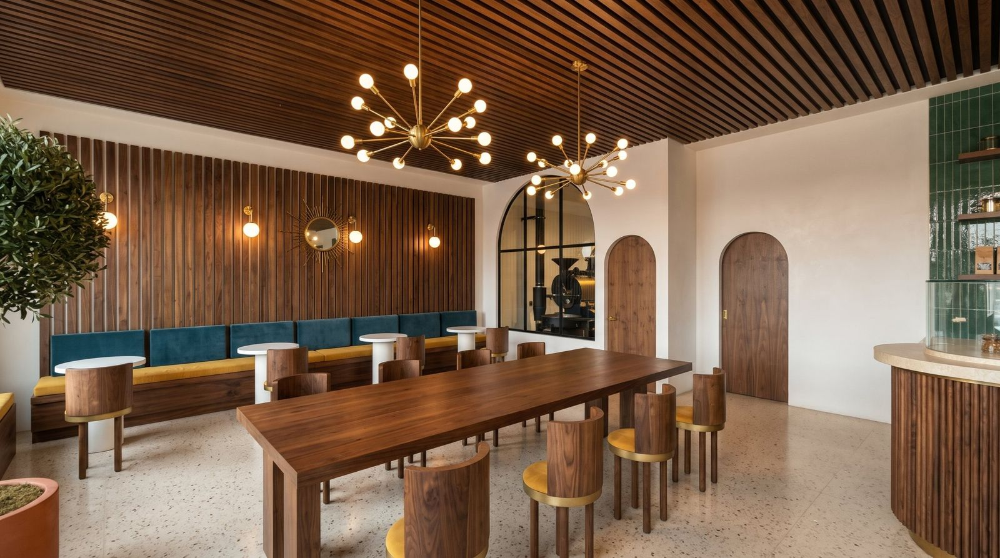
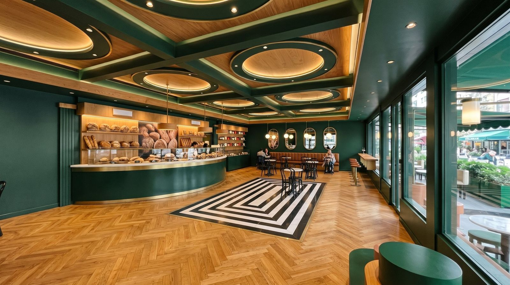
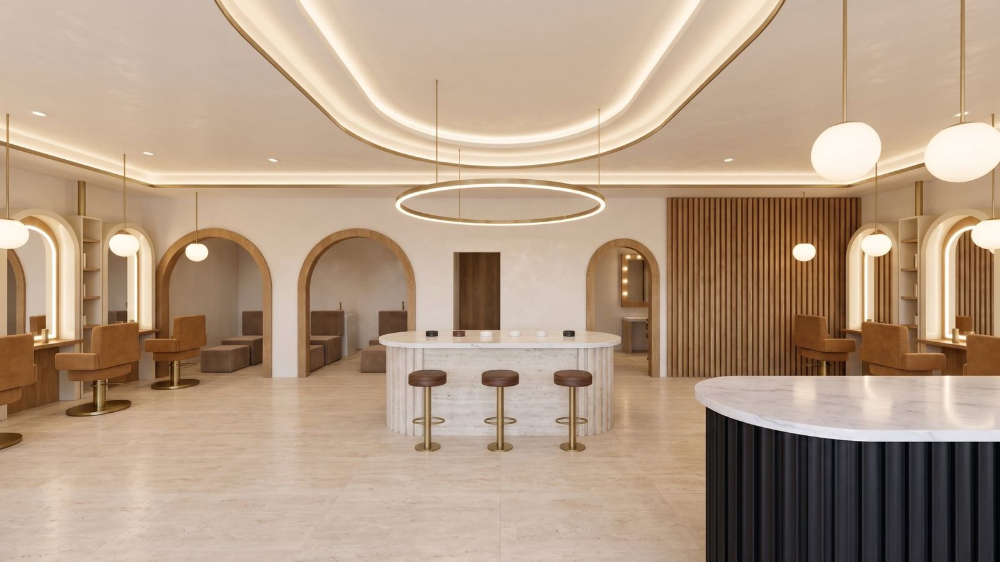
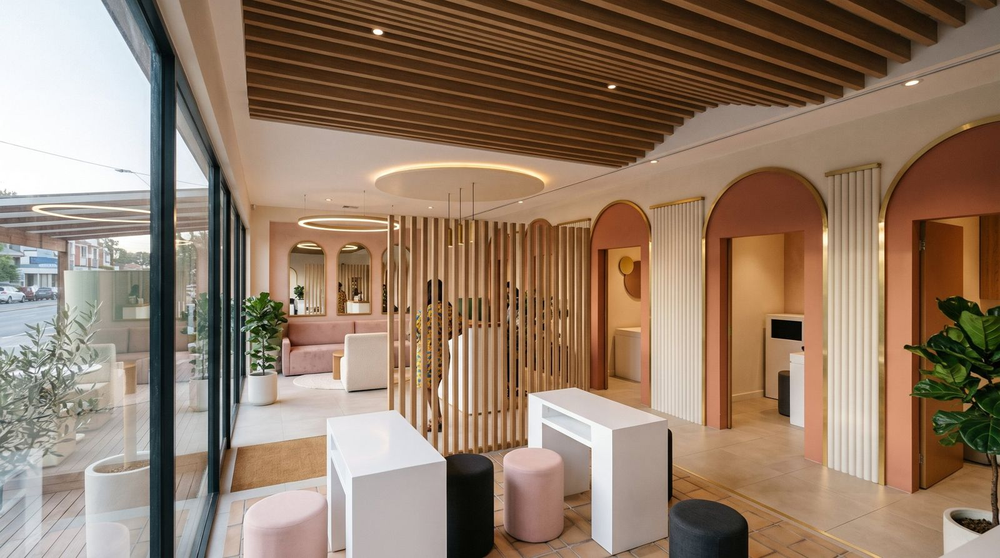

Bir kafe, pastane, klinik, eczane ya da kuaför açarken mekânın tasarımı yalnızca güzel görünmekle ilgili değildir. İyi bir ticari iç mekân; müşteriyi içeri çeker, çalışanların işini kolaylaştırır, ruhsat ve denetimlerden sorunsuz geçer ve markanızı akılda kalıcı hâle getirir. Bu yazıda ticari mekân tasarlatırken dikkat edilmesi gereken başlıkları topladık.
Her ticari mekân bir hikâye anlatmalı. Sıcak ve samimi bir mahalle kafesi ile hızlı servis veren bir kahve dükkânının, ya da güven veren bir klinik ile canlı bir güzellik salonunun mekânsal dili birbirinden çok farklıdır. Renkler, malzemeler, aydınlatma ve tabela; logonuzdan menünüze kadar marka kimliğinizle bütünleşmelidir.

Ticari mekânın verimliliği, doğru yerleşime bağlıdır:

Ticari mekânlarda en pahalı hatalar genellikle görünmeyen yerlerde yapılır:
Bir işyerini açıp çalıştırabilmek için belediyeden işyeri açma ve çalışma ruhsatı alınması gerekir. İstenen belgeler faaliyet türüne göre değişir; gıda işletmeleri, sağlık kuruluşları ve kuaförler için ek belgeler ve meslek odası kayıtları istenebilir. Yangına karşı gerekli önlemlerin alınmış olması, bazı işyerleri için ise itfaiye raporu ruhsatın şartları arasındadır; mevzuat bu konuda 2026'da da güncellendi.
Tasarım aşamasında bu şartları göz önüne almak; kaçış yolları, yangın dolapları, malzeme seçimi ve engelli erişimi gibi konularda sonradan pahalı değişiklikler yapmak zorunda kalmanın önüne geçer. Kiralayacağınız dükkânın yapı kullanma izninin ve kullanım amacının açacağınız işe uygun olup olmadığını da sözleşmeden önce kontrol edin.
Ticari mekânlarda kira, mekân boş kaldığı her gün işler. Bu yüzden tasarımın, malzeme siparişlerinin ve uygulamanın iyi planlanmış bir takvimle yürütülmesi önemlidir. Özel üretim mobilyalar, tabelalar ve ithal malzemeler için tedarik sürelerini baştan hesaba katın. Bütçeyi; inşaat ve tesisat, mobilya ve dekorasyon, ekipman ve tabela olarak ayrı kalemlerde planlamak sürprizleri azaltır.
Fotogerçekçi render ve 360° sanal tur sayesinde mekânınızı uygulama başlamadan içinde dolaşır gibi görebilirsiniz. Bu; malzeme ve renk kararlarını netleştirmenin yanında, ortaklarınıza, yatırımcılarınıza ya da franchise merkezinize projeyi sunmak için de güçlü bir araçtır. Aynı görseller açılıştan önce sosyal medyada merak uyandırmak için de kullanılabilir.

Diş kliniği ve eczane projelerimizin 360° sanal turlarını Diş Kliniği ve Eczane sayfalarından gezebilirsiniz.
Taşıyıcı sistemi etkilemeyen iç mekân düzenlemeleri genellikle yapı ruhsatı gerektirmez; ancak cephe, tabela, yapısal değişiklikler ve kullanım amacı değişikliği için belediye izinleri gerekebilir. Ayrıca bina yönetiminin ve mal sahibinin onayını almak gerekir.
Faaliyet türünüze göre istenen şartları (yangın önlemleri, hijyen, havalandırma, engelli erişimi gibi) baştan tasarıma dahil etmek, ruhsat aşamasında sonradan değişiklik yapma ihtiyacını azaltır.
Evet. Fotogerçekçi render, video ve 360° sanal tur ile mekânı uygulama başlamadan görebilirsiniz.
Bu konuda profesyonel destek almak isterseniz projelerimiz sayfasını inceleyebilirsiniz.
Arsanızı, binanızı ya da hayalinizdeki mekânı anlatın; size nasıl bir yol izleyebileceğimizi birlikte konuşalım.